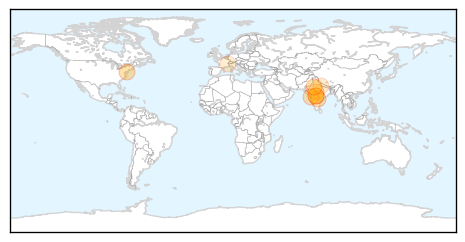
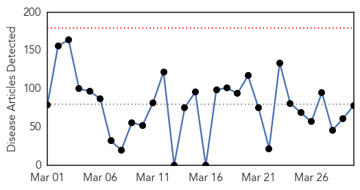
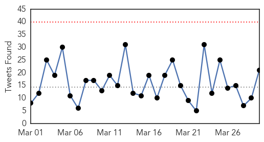
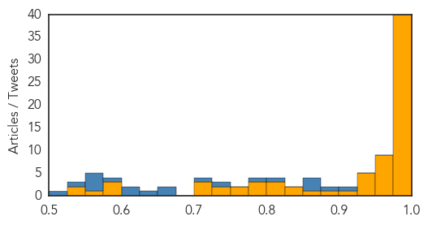

Swine Flu
30-Day Web Trend
0 alerts, 0 warnings

30-Day Twitter Trend
0 alerts, 0 warnings

Article Locations
Article Confidences

Top Articles:
- 1.000
- Battling a pandemic
- 0.994
- Flu cases exceed record highs in Delaware
- 0.993
- 76 swine flu deaths in Telangana since January
- 0.991
- Swine flu cases in state rise to 41
- 0.956
- India, U.S. researchers clash over swine flu strain mutation
- 0.916
- MP: Class 10 student develops app to help swine flu, dengue patients
- 0.912
- Two senior citizens and one child dies from swine flu in Mumbai
- 0.879
- Indian Swine-Flu Virus Reveals Dangerous, New Mutation
- 0.690
- Awareness programmes on H1N1
- 0.638
- Uttar Pradesh Bird Flu Alert Shifts to Agra
- 0.567
- Today's stories from newspapers in Ottawa
Top Tweets:
-
No tweets found for Mar 30, 2015
Ebola
30-Day Web Trend
0 alerts, 0 warnings

30-Day Twitter Trend
0 alerts, 0 warnings

Article Locations

Article Confidences
Top Articles:
- 1.000
- Ebola patient at NIH improves
- 1.000
- American Ebola patient's condition improves from 'serious' to 'fair'
- 1.000
- Resurgence of Ebola forces Guinea and Sierra Leone to tighten security
- 1.000
- Ebola survivors to observe a period of sexual abstinence
- 0.999
- UN Ebola head warns against complacency as fight enters last lap
- 0.999
- Ebola in West Africa: the importance of “getting to zero”
- 0.999
- Science, Technology and Medicine News Updates From Asia
- 0.999
- Nebraska health care worker being monitored for Ebola has unrelated health issue: hospital
- 0.999
- UN Ebola head warns against complacency as fight enters last lap - Guinea
- 0.998
- Guinea 'Emergency' Aimed at Stemming Spread of Ebola
- 0.998
- No Ebola in Kurdistan, but KRG on alert
- 0.997
- Editorial: In Ebola nightmare, deadly delays
- 0.995
- Ministry of Health calls for accurate health reporting
- 0.995
- UN Ebola head warns against complacency as fight enters last lap
- 0.995
- Condition of US Ebola patient upgraded to ‘fair’
- 0.994
- 3-Day curfew in Sierra Leone comes to an end :: La Prensa :: America in English
- 0.994
- Guinea declares Ebola 'health emergency' in five regions
- 0.993
- Guinea: Border Closed Over Ebola Fears
- 0.993
- Guinea Declares Ebola 'Health Emergency' in Five Regions
- 0.992
- Guinea: Guinea 'Emergency' Aimed at Stemming Spread of Ebola
- 0.991
- U.S. Ebola patient may be out of the woods
- 0.990
- 3 West African countries increase fight to end Ebola
- 0.990
- Ebola: symptom of a larger problem The McGill Daily
- 0.990
- Person being monitored for Ebola in Omaha is in stable condition after cardiac problem
- 0.990
- Guinea shuts border with Sierra Leone in effort to end Ebola
- 0.989
- Sierra Leone’s 3-Day Ebola Lockdown is Over
- 0.988
- West Africa increases fight to end Ebola
- 0.987
- Health eVillages Coalition Continues Efforts to Provide Critical Ebola Clinical Information to Millions Worldwide
- 0.984
- U.S. health care worker suffering Ebola improves
- 0.983
- Efforts to beat ebola intensify
- 0.982
- Three West African Countries Increase Fight to End Ebola
- 0.981
- Guinea shuts border in Ebola fight
- 0.980
- Guinea shuts border with Sierra Leone in effort to end Ebola
- 0.980
- Carnival Pride takes it first trip out of Baltimore after hiatus
- 0.980
- Technology aids 'peeping Toms,' makes trauma worse for victims
- 0.980
- Guinea shuts border with Sierra Leone in effort to end Ebola
- 0.979
- Guinea shuts border with Sierra Leone in effort to end Ebola
- 0.979
- Three-Day Curfew in Sierra Leone Comes to an End
- 0.978
- Guinea shuts border with Sierra Leone in effort to end Ebola
- 0.977
- British army nurse cured by Chinese-made drug
- 0.974
- Government Urges Survivors of Ebola to Practice Safe Sex
- 0.972
- WHO Reiterates Continued Support to Defeat Ebola
- 0.971
- Ebola crisis: Why tax breaks hurt health systems in Sierra Leone
- 0.971
- Everything is Back to Normal after Three-day Isolation against Ebola in Sierra Leone ends
- 0.964
- Fighting Ebola in West Africa: Q&A with Steven VanRoekel
- 0.963
- Guinea shuts border with Sierra Leone in effort to end Ebola
- 0.960
- Ebola: bat species match
- 0.959
- The End of Ebola? Lessons at the Epidemic's One Year Anniversary
- 0.952
- Patient being monitored for Ebola has “cardiac issue”
- 0.943
- Guinea shuts border in Ebola fight
Showing top 50 articles...
Top Tweets:
- 0.988
- RML finds no evidence Ebola virus evolving - The Missoulian http://t.co/o13JCLwVN7 ebola EVD
- 0.969
- Rocky Mountain Lab finds no evidence Ebola virus evolving - The Missoulian http://t.co/DC3t1fykSZ ebola EVD
- 0.969
- New, whole-virus vaccine for Ebola effective in primates - Ars Technica http://t.co/va7yW71UIy ebola EVD
- 0.969
- Ebola Vaccine Trials Underway in West Africa - Voice of America http://t.co/drNP7YQagH ebola EVD
- 0.963
- Liberia urges sexual caution to help nation beat Ebola outbreak - Global Times http://t.co/7s3KFZWlzh ebola EVD
- 0.952
- News pouch on avianflu avianinfluenza Ebola EbolaResponse MERS antimicrobialresistance vaccine. Read here: http://t.co/75rJEsYUGI
- 0.939
- The Ebola Outbreak: Forgotten Far Too Soon - Asian Scientist Magazine http://t.co/jiXurtD1xN ebola EVD
- 0.909
- Patient Monitored For Ebola Has Cardiac Issue While Jogging - WOWT http://t.co/57lu1O16TH ebola EVD
- 0.885
- Ebola patient at NIH improves - Washington Post http://t.co/oOIIm4hFia ebola EVD
- 0.867
- Ebola: match between Zambia and West African bats - Independent Online http://t.co/WVOdPpPysR ebola EVD
- 0.857
- Today's Ebola Executive Summary, on Sierra Leone's lockdown, Guinea's new cases and more http://t.co/56e3JkjZSB
- 0.848
- Ten new cases diagnosed during Ebola lockdown in Sierra Leone http://t.co/uajAqhq3Z0
- 0.847
- Liberia recommends Ebola survivors practice safe sex to prevent probable transmission - http://t.co/JMoqadvd1s ebola
- 0.821
- CDC worked w/ local ministries of health & partners in W.Africa the past yr to help slow spread of Ebola. ZeroCases http://t.co/ByBHjMq570
- 0.811
- Made-In-China Ebola Vaccine Clears Phase I Trials - Asian Scientist Magazine http://t.co/eCWuir77u1 ebola EVD
- 0.782
- American Who Caught Ebola Improves to Fair Condition - ABC News http://t.co/exwzo6oTlY ebola EVD
- 0.733
- CDC won’t stop its efforts in West Africa until we get to zero new cases of Ebola. https://t.co/rGIXHlRcIe
- 0.728
- RT: Over 15 health Orgs share information for Ebola response in webinars with: http:…
- 0.727
- Guiné reforça alerta de emergência por ebola em cinco departamentos | http://t.co/qL6gyFIheG R7 via
- 0.719
- Liberia Ebola Survivors Complain About Lack of Support - Voice of America http://t.co/Yb7hBFxu15 ebola EVD
- 0.718
- RT: Printing thousands of Ebola health posters ft & @YayaToure for Guinea w/ @AlliedPrinting! http://t.c…
- 0.711
- Person being monitored for Ebola in Omaha is in stable condition after cardiac ... - Kearney Hub http://t.co/a0PId983rH ebola EVD
- 0.673
- Guinea declares 45-day Ebola health emergency http://t.co/EjnnkHAfq8
- 0.660
- RT: Methinks low numbers of new Ebola cases in SierraLeone despite lockdown kd wel mean end of virus is nigh. Can't bring ou…
- 0.656
- Former Alexandrian reflects on stint as Ebola nurse - http://t.co/mW94UDZ1Bn http://t.co/Xp9BhPee25 ebola EVD
- 0.638
- Guinée : Alpha Condé décrète l’UrgenceSanitaire Renforcée dans plusieurs préfectures… ebola @Africaguinee http://t.co/Xfx6jjQzCm
- 0.522
- Oneyear on: AfDB’s support of Ebola-affected countries continues http://t.co/2xTZgPp86d
- 0.512
- Repost from anthonylaffor28 via Africa, together we can defeat EBOLA. Thanks to you, the Africa union… https://t.co/kGiFINZfDA